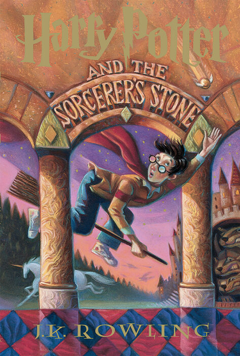
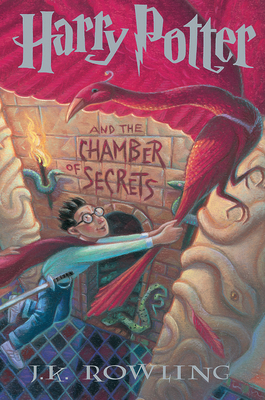
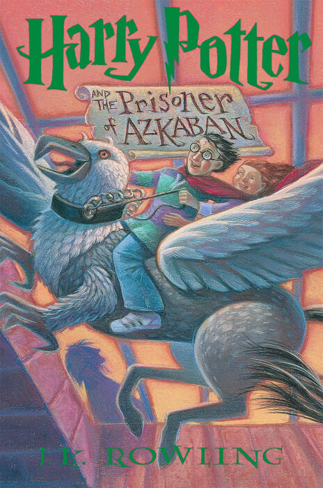
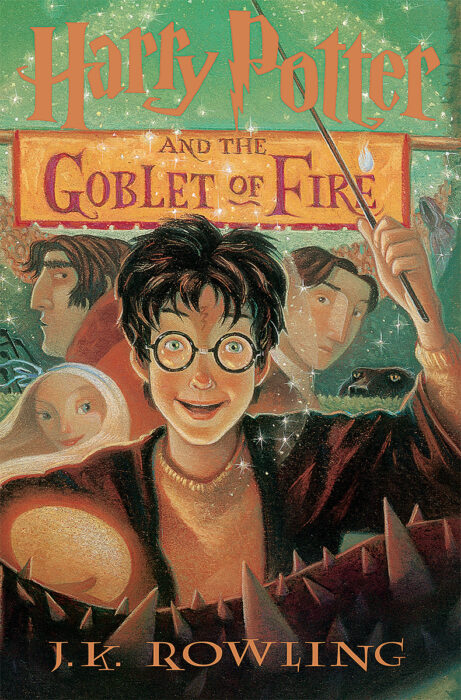
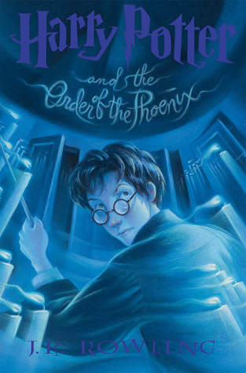
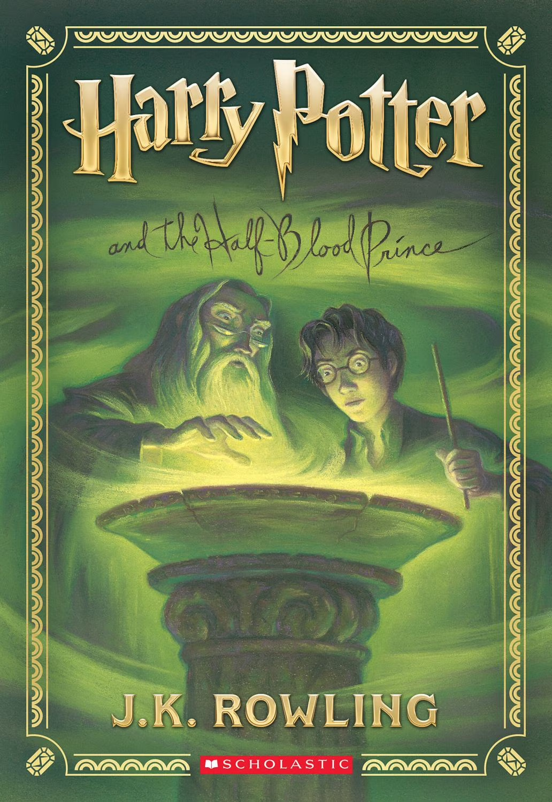
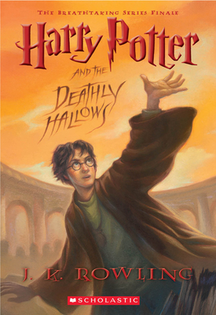

Introduction
I was introduced to Harry Potter on my seventh birthday in 2002 when I recieved two VHS copies of Harry Potter and the Sorcerer's Stone. From there I began to obsess over the movies and began to read the books when I was in third grade.

I was introduced to Harry Potter on my seventh birthday in 2002 when I recieved two VHS copies of Harry Potter and the Sorcerer's Stone. From there I began to obsess over the movies and began to read the books when I was in third grade.
Here are the HP (Harry Potter) books in order and release dates:
Note these are the US release dates and name.
Born July 31, 1980
Known as "The boy who lived" and "The chosen one."
Parents: James and Lily Potter
Wand: Holly, phoenix feather core
Born September 19, 1979
Wand: Vine, dragon heartstring core
"Insufferable know-it-all" as an insult
Born March 1, 1980
Wand: Willow, Unicorn tail hair core
"Ron"(shortened version of his name), "Won-Won" by Lavender Brown






